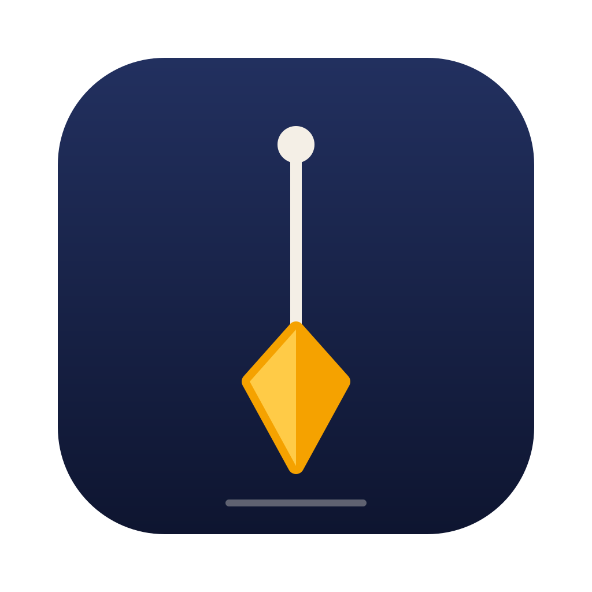
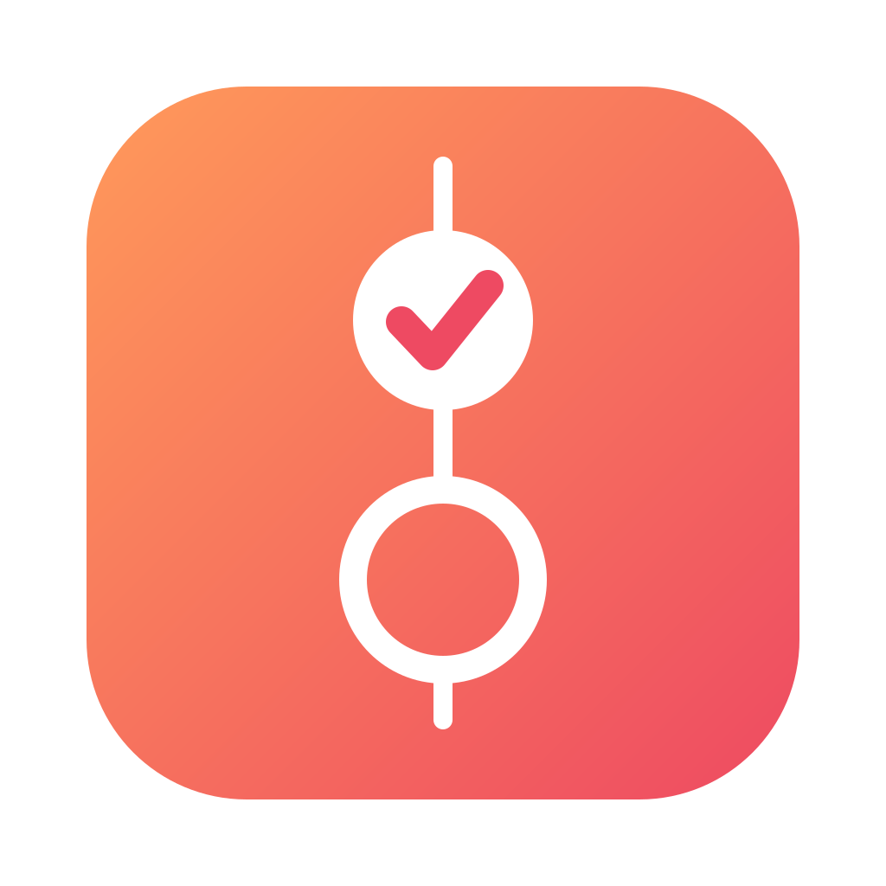
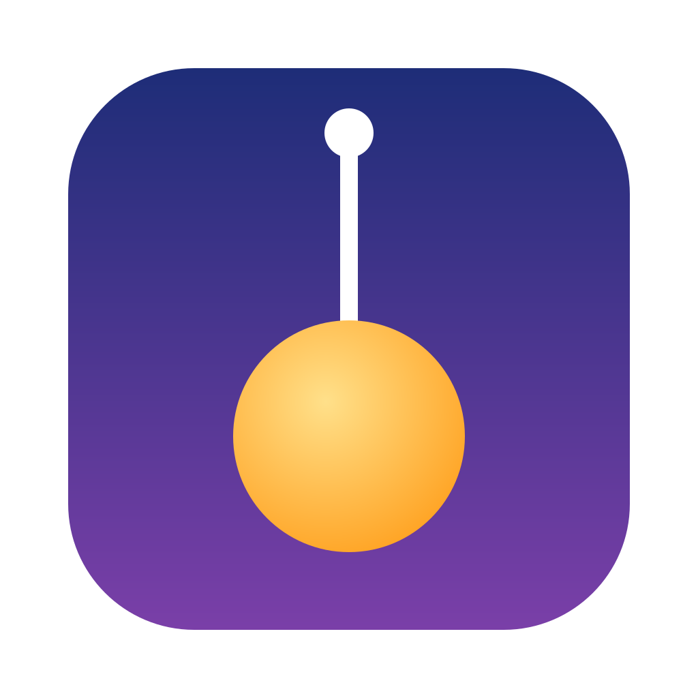
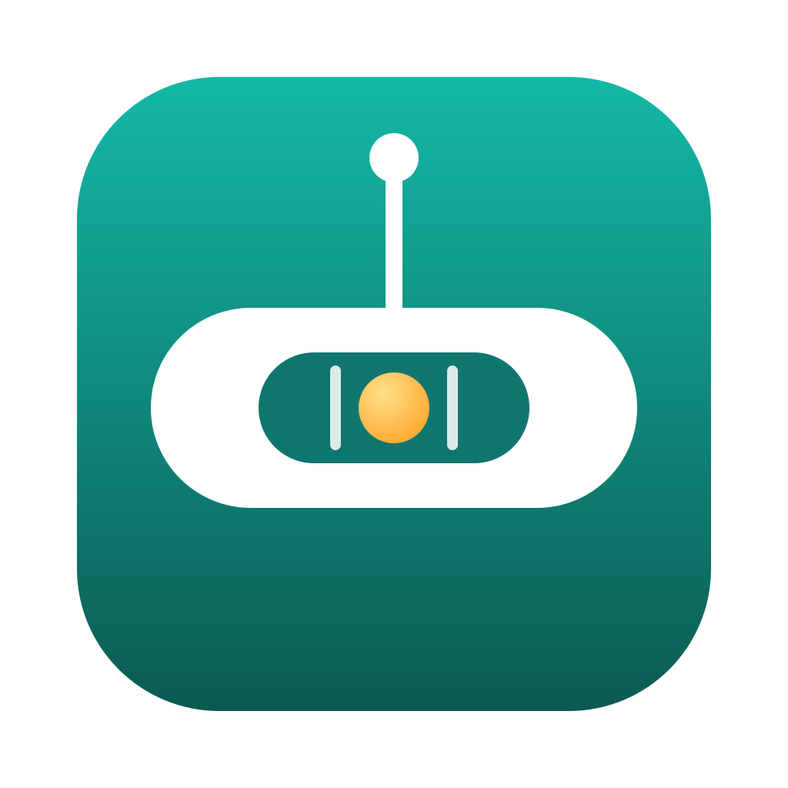
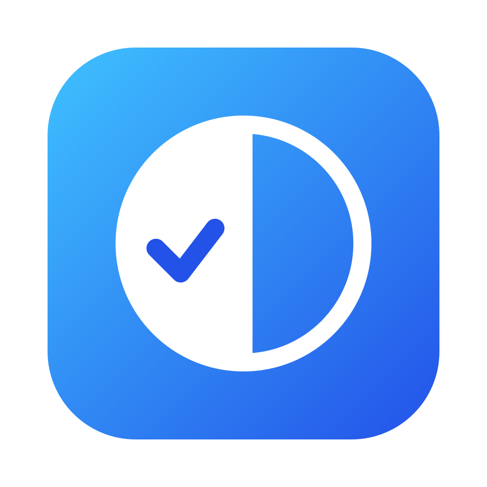
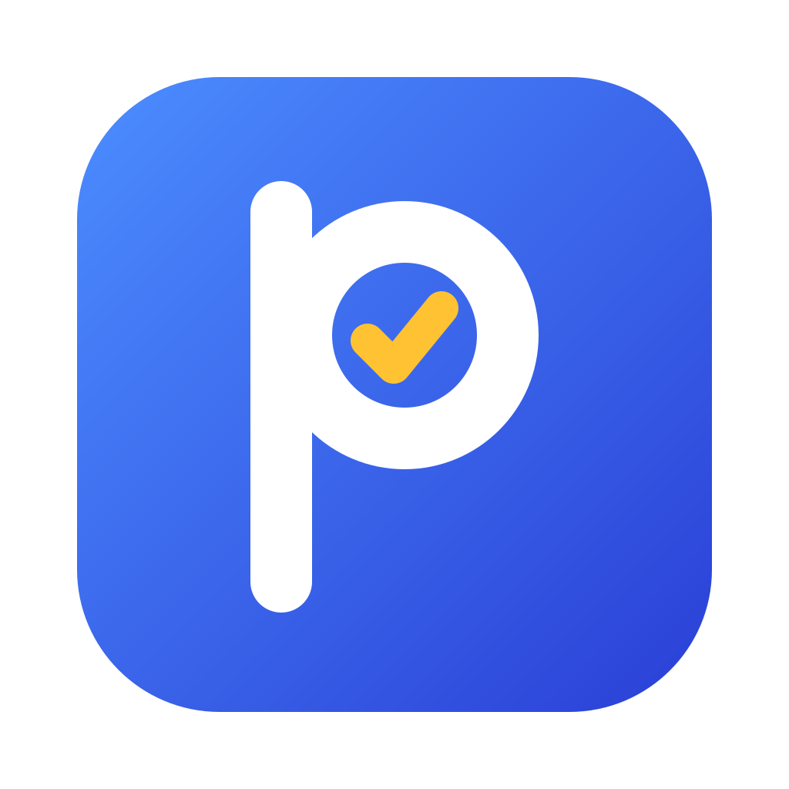
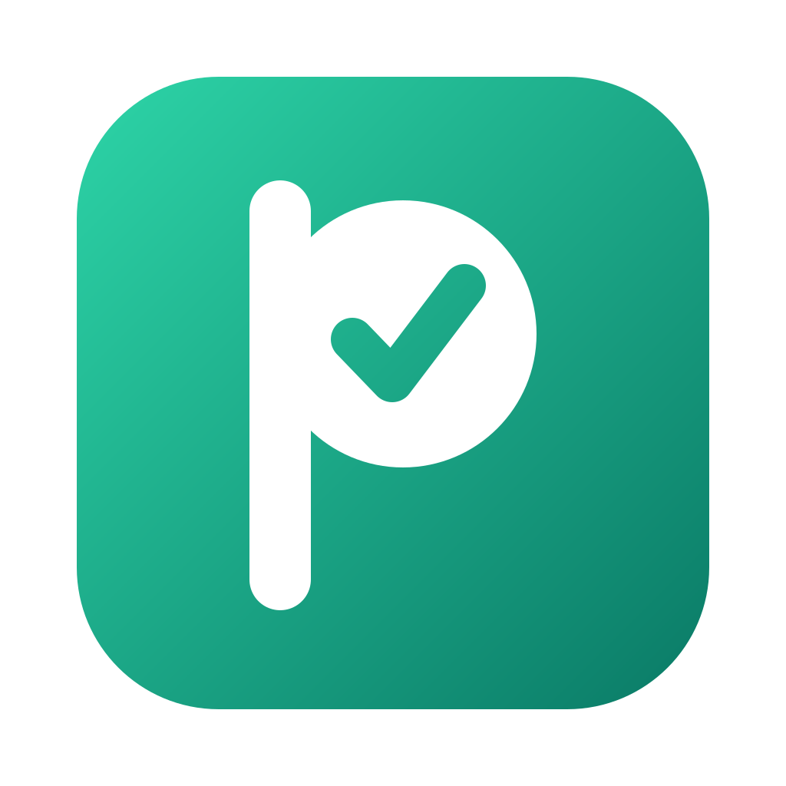
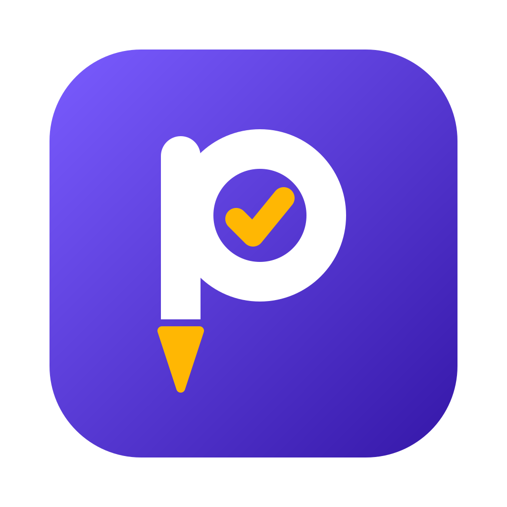
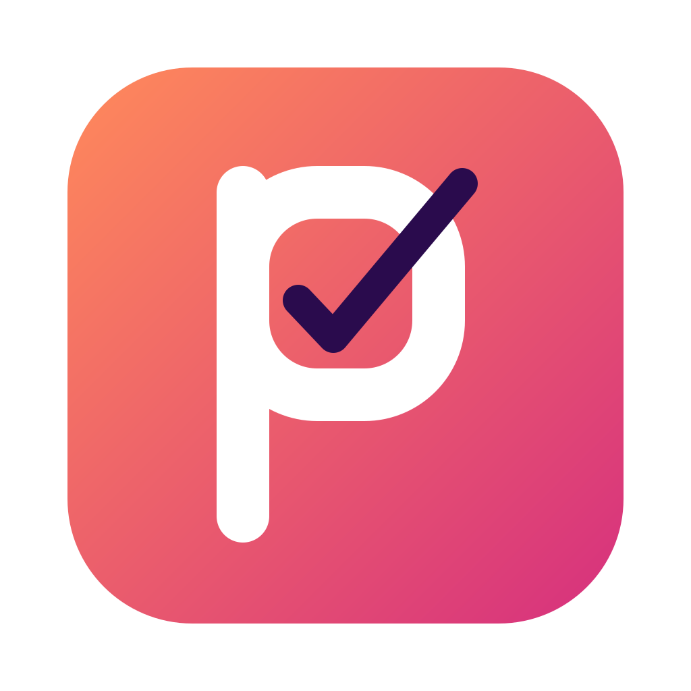
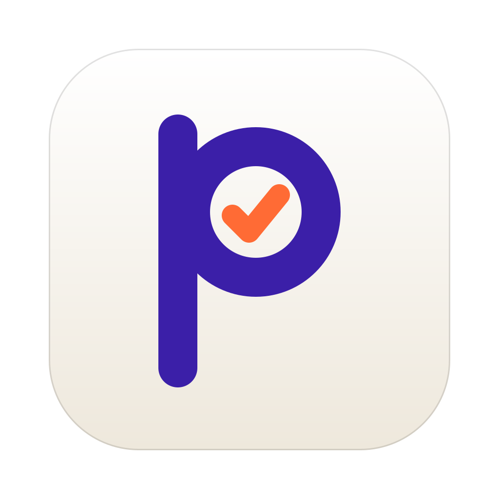

Cada ícone aparece grande e em 64, 32 e 16 px sobre fundo claro e escuro, para ver se continua legível pequeno. Opções 1–6: primeira rodada. 7–12: segunda rodada. 13–18: variações do monograma P com check.

O nome literal: uma linha vertical com o peso. Sóbrio e fácil de reconhecer, mas não diz “tarefa”.
O peso do prumo vira o check. Junta o nome com “concluído” em uma só forma.

Um círculo cheio (hoje, feito) e um vazio (amanhã), alinhados no prumo. É o que o app organiza.
Check com o sol de “amanhã” atrás. O mais expressivo e colorido; o menos ligado ao nome.
Folha com itens, o primeiro concluído. O mais óbvio e comum entre apps de tarefas.
A haste do P é o prumo e o bojo é uma caixa de seleção com check. Mais de marca que de ícone.

O peso do prumo é o sol. Fio grosso e círculo grande: forma simples, pensada para tamanhos pequenos.
Calendário com argolas e um check no dia. Fala de data e de tarefa de uma vez; é um visual bem familiar.
Só um check grosso, com a haste curta em âmbar. O mais legível pequeno e o mais genérico.

Nível de bolha com a bolha centrada e um fio de prumo em cima: alinhamento, a ideia por trás do nome.

Metade cheia com check (hoje) e metade vazia (amanhã), separadas por uma linha vertical. Abstrato.
Fita pendurada do topo, com ponta em V que lembra o peso do prumo, e um check. Silhueta bem marcada.

O #6 corrigido: P branco com check âmbar sobre azul vibrante, sem o problema de fundo escuro.

Bojo sólido com o check recortado (espaço negativo). Silhueta mais forte pequeno que o P de contorno.

A haste termina em um peso de prumo âmbar, solto da letra. Traz o nome e o check na mesma marca.
P azul-marinho em traço mais leve sobre amarelo quente, com check rosa. Se destaca bastante entre outros ícones.

Bojo quadrado e um check grande que atravessa a letra pelo canto. O mais dinâmico; menos limpo.

Fundo off-white com P roxo e check laranja. Versão clara, com contorno fino para não sumir em páginas brancas.